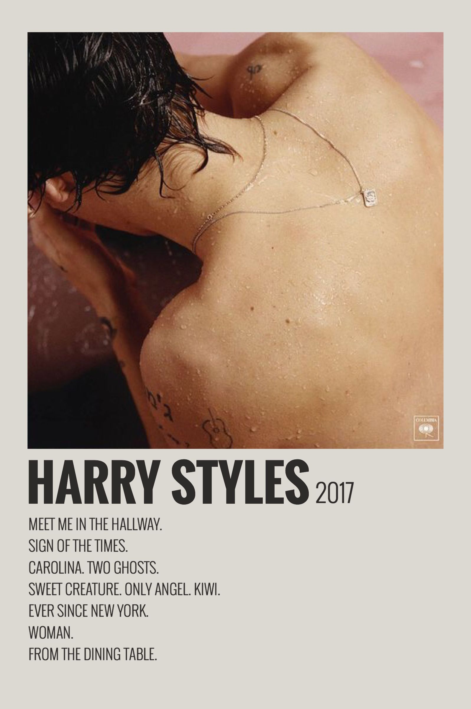
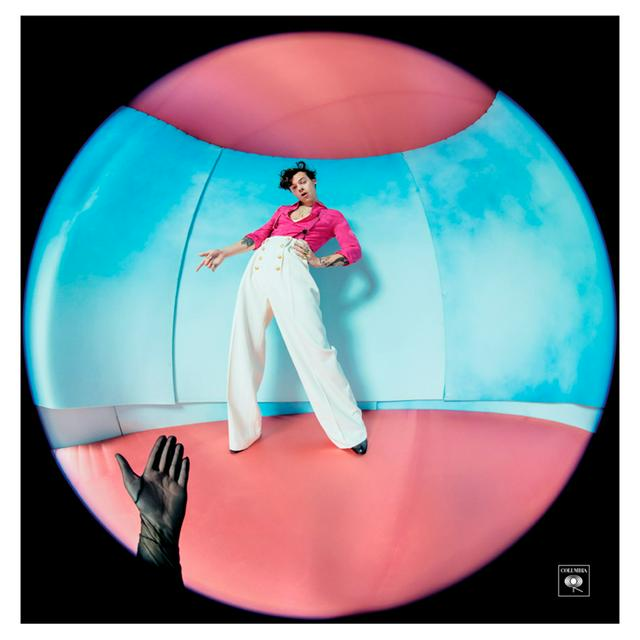
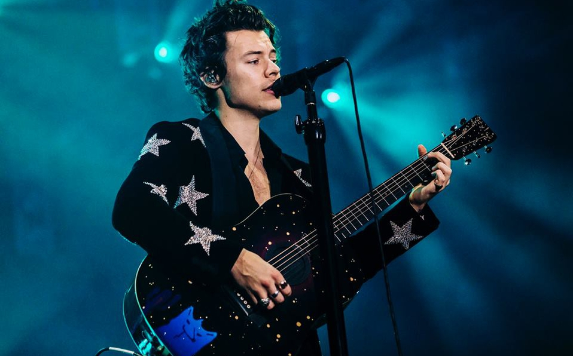
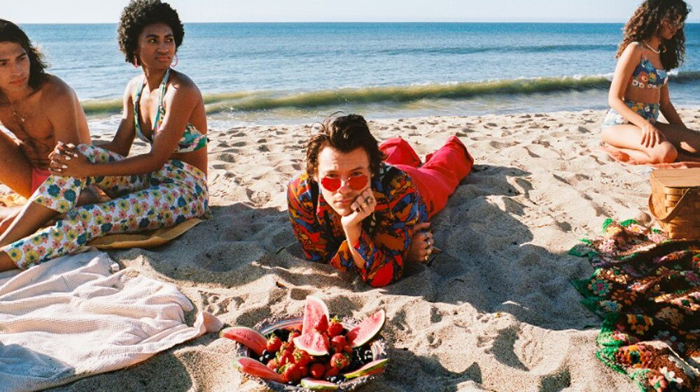
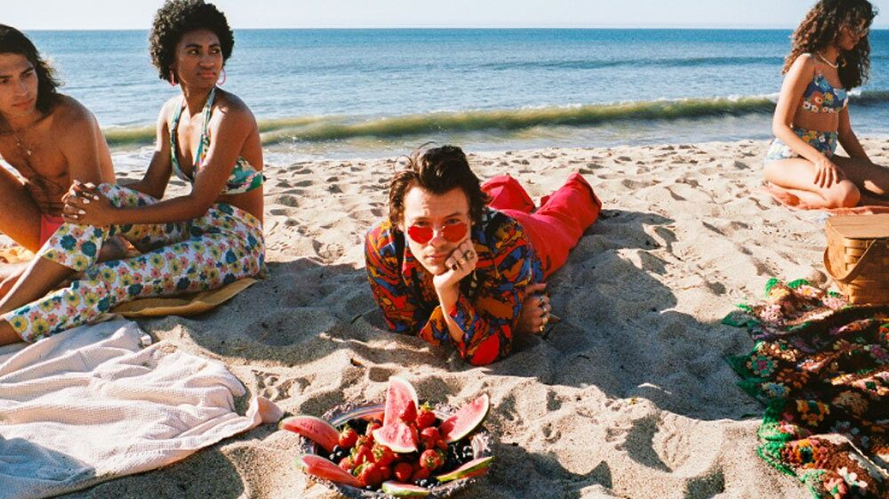

Nacido el 1 de febrero de 1994, Harry Styles es un cantante británico que se dio a conocer al mundo gracias al éxito de la banda británica 'One Direction'. Antes de la fama trabajaba en una panadería en su pequeño publo británico nativo Holmes para poder pagar los gastos que generaba la música y la banda en la que se encontraba con unos compañeros de la escuela "White Eskimo"

En el año 2010 participó en el programa "The X Factor" donde cantó "Isn't she lovely" de Stevie Wonder, tras recibir la clasificación al concurso los jurados decidieron unirlo a otros 4 jovenes y formar la banda "One Direction" que, aunque no ganó el concurso y quedó en tercer puesto, tuvo tanto éxito entre el público joven que Simon Cowell pagó dos millones de libras para que firmaran con la discográfica Syco Records. Con esta banda, Harry participó en varias giras mundiales y participó en la creación y composición de 4 álbumes que alcanzaron buenas posiciones en las listas de más vendidos.
Dos años después de la separación de la banda británica, Harry publicó sorpresivamente su primer álbum en solitario que, con canciones como "The sign of the Times", "Ever since New York" y "Meet me in the hallway" debutó en el primer lugar de las listas musicalles de países como Canadá, República Checa, Irlanda y Escocia.
En 2019 publicó su segundo álbum como solista llamado "Fine Line" que tuvo varios récords en ventas, y promovió su lema "Treat People With Kindness" con una canción.
Hasta el momento solo ha hecho dos giras:
| Nombre | Fecha |
|---|---|
| Harry Styles: live on tour -- | 2017 - 2018 |
| Love on Tour | 2020 |
Con su simpatía, ternura y amabilida, Harry Styles se ha ganado el corazón de muchos fanáticos. Publicamente apoya movimimentos como el feminismo, la lucha por los derechos de la comunidad LGBTIQ+, y 'Black lives matter'; además de sus conciertos en los que interactúa con el público.
 

Para estar actualizado sobre las noticias de Harry Styles, sucríbete:
Nombre Apellido Correo